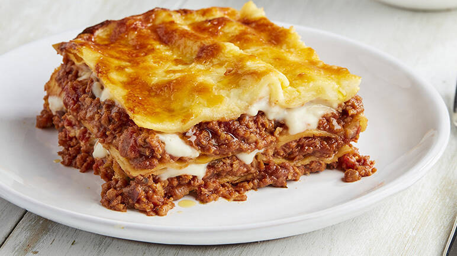

LasagneItalian: [laˈzaɲɲe]; singular lasagna, Italian: [laˈzaɲɲa]) are a type of pasta, possibly one of the oldest types,[2] made of very wide, flat sheets. Either term can also refer to an Italian dish made of stacked layers of lasagne alternating with fillings such as ragù (ground meats and tomato sauce), vegetables, cheeses (which may include ricotta, mozzarella, and parmesan), and seasonings and spices, like Italian seasoning, such as garlic, oregano and basil.[3] The dish may be topped with grated cheese, which becomes melted after baking. Typically, cooked pasta is assembled with the other ingredients and then baked in an oven. The resulting casserole is cut into single-serving square portions.
